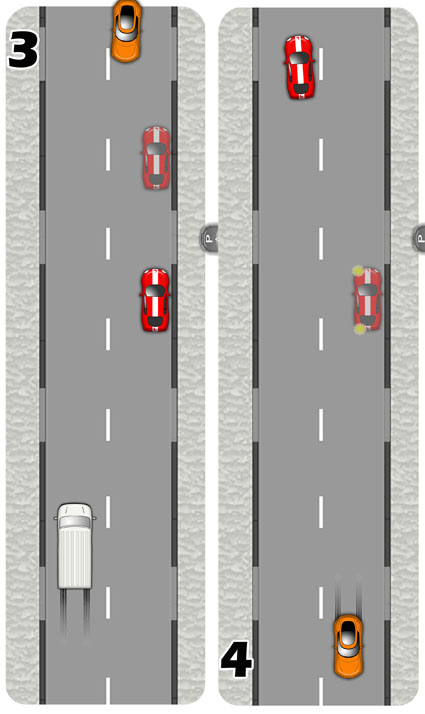

You may be asked to pull up on the right, reverse two car lengths and pull away again on your driving test.
Generally, it is advisable to pull up on the left side of the road when parking, for various reasons:
- The process is simpler, easier and possibly less obstructive to the flow of traffic.
- The lights of the car are dipped to the left. When parking at night on the right, be sure to immediately turn off your lights once stopped, to avoid dazzling oncoming traffic.
- Setting off again from the left allows much better driver visibility if a vehicle parks in front of you.
However, it is likely that you will encounter scenarios where pulling up on the right is your only option. For example:
- All of the spaces on the left may be occupied.
- There may be parking restrictions on the left but not on the right.
- There may be driveways on the left and parking spaces on the right.
If asked to do this manoeuvre on test, the examiner will deliver the instruction like so:
"Pull up on the right side if it is safe to do so, please.
I'd now like you to reverse back for about two car lengths keeping reasonably close to the kerb.
Drive on when it is safe to do so".
They will be looking to see you demonstrate control, accuracy and to be fully aware of your surroundings throughout.
Once on the right side of the road, if another vehicle pulls up behind the car before you've had chance to reverse, the manoeuvre will be abandoned and the examiner will ask you to drive on. Another manoeuvre will then be carried out later in the test.
If, during the excercise, a vehicle pulls up in front of your car, you should continue. You may need to reverse further than two car lengths to gain a better view of the road ahead. If this isn't possible, the examiner will control the situation and give appropriate advice.
Carrying Out The Manouevre
1.Check your main and right mirrors for the proximity of following traffic, then look ahead for a safe, legal and convenient place to park on the right side of the road. The examiner will ask you at an appropriate location where there are parking opportunities. You will need to avoid driveways, bus stops and be 10yds from and not directly opposite side roads.
Apply a right signal then position your car just left of the centre of the road and smoothly stop if there is oncoming traffic.
2.If there is no oncoming traffic or once it has passed, check your main and right mirrors again and steer smoothly to the right kerb parking close and parallel to it.
Don't drive for too long on the wrong side of the road, making sure you are stationary by the time any oncoming traffic gets near.
Stopping parallel with your wheels straight will help with the next part.
3.Put the car into reverse and check all around using your mirrors and over both shoulders before reversing for two car lengths if it is safe to.
Make adjustments to the steering if necessary keeping close to the kerb. Use the right mirror to gauge your position if it helps but also keep looking around for approaching traffic, vehicles emerging from driveways and pedestrians.
Consider stopping to allow traffic to pass if need be. As a moving obstacle, you could be much more difficult to deal with than a stationary one.

4.Select first gear and prepare the car to set off. Make a thorough all round check finishing with your left blindspot. If it is safe to, pull away and steer back to the left side of the road to resume normal driving. Be cautious of oncoming traffic as your closing speed will be both of your speeds combined. Signal left to show you are pulling away if there is anybody who might benefit.